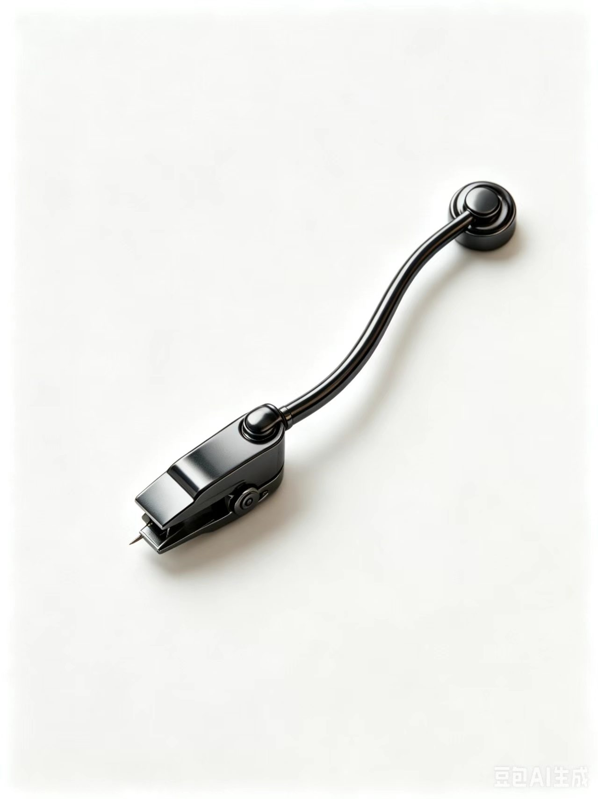
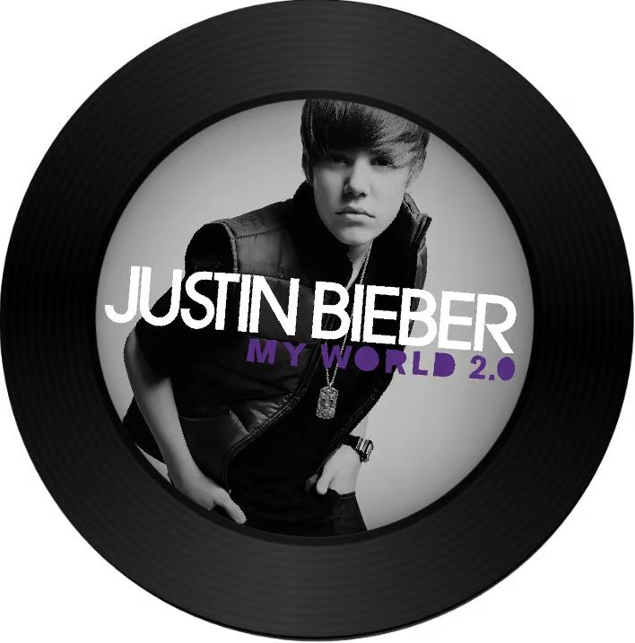

词/曲: Nasri Atweh/ADAM MESSINGER/Justin Bieber
Everybody's laughing in my mind
Rumors spreading 'bout this other guy
Do you do what you did when you
did with me
Does he love you the way I can
Did you forget all the plans
that you made with me
'cause baby I didn't
That should be me
Holdin' your hand
That should be me
Makin' you laugh
That should be me
This is so sad